S2. Realistic adult comparison (G2)
NEW Realistic adult comparison on the MNE sample subject: Neuromag at the measured head position vs single-axis OPM arrays (10-mm cell, 7-mm standoff). Detectability is the known-topography matched-filter SNR sqrt(sT C+ s). The full generated report is here; methods in section 8 of the methods.
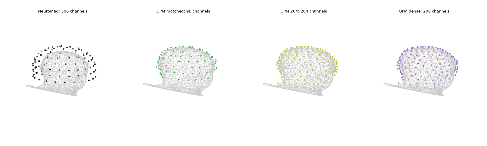
Headline comparison
| Noise condition | OPM array | vs Neuromag combined | Targets OPM higher | Parcels OPM higher | vs gradiometers | vs magnetometers |
|---|---|---|---|---|---|---|
| intrinsic | OPM matched | 0.53x [0.51-0.55] | 0 % | 0 % | 2.29x [2.23-2.34] | 0.55x [0.53-0.57] |
| intrinsic | OPM 204 (channel budget) | 0.73x [0.71-0.76] | 3 % | 1 % | 3.14x [3.06-3.22] | 0.76x [0.73-0.78] |
| intrinsic | OPM dense | 0.74x [0.72-0.77] | 4 % | 1 % | 3.17x [3.08-3.25] | 0.76x [0.74-0.79] |
| intrinsic+brain | OPM matched | 1.01x [0.99-1.03] | 56 % | 47 % | 1.13x [1.11-1.15] | 1.04x [1.01-1.06] |
| intrinsic+brain | OPM 204 (channel budget) | 1.14x [1.12-1.16] | 100 % | 100 % | 1.33x [1.29-1.35] | 1.19x [1.16-1.22] |
| intrinsic+brain | OPM dense | 1.14x [1.12-1.17] | 100 % | 100 % | 1.33x [1.30-1.36] | 1.19x [1.17-1.22] |
| intrinsic+brain+env | OPM matched | 1.01x [0.99-1.03] | 54 % | 47 % | 1.11x [1.08-1.13] | 1.06x [1.05-1.08] |
| intrinsic+brain+env | OPM 204 (channel budget) | 1.14x [1.12-1.16] | 99 % | 100 % | 1.29x [1.26-1.32] | 1.22x [1.20-1.25] |
| intrinsic+brain+env | OPM dense | 1.14x [1.12-1.17] | 99 % | 100 % | 1.29x [1.26-1.32] | 1.23x [1.20-1.26] |
| projected | OPM matched | 0.95x [0.90-0.98] | 36 % | 27 % | 1.02x [0.97-1.07] | 1.00x [0.96-1.03] |
| projected | OPM 204 (channel budget) | 1.11x [1.08-1.14] | 83 % | 87 % | 1.24x [1.21-1.28] | 1.20x [1.17-1.23] |
| projected | OPM dense | 1.12x [1.08-1.15] | 84 % | 87 % | 1.25x [1.21-1.29] | 1.20x [1.17-1.23] |
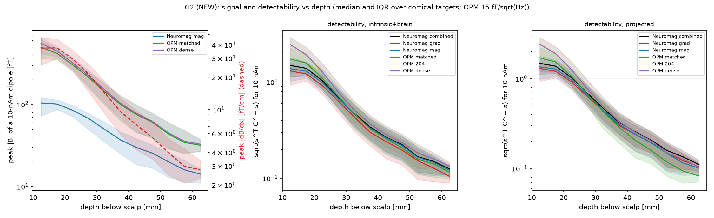
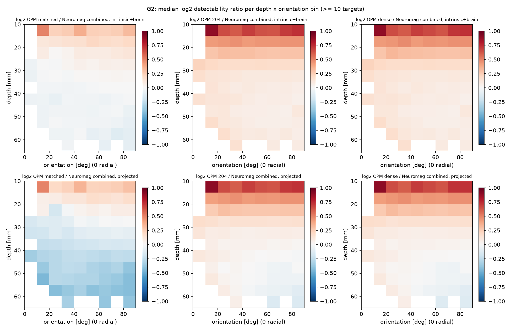
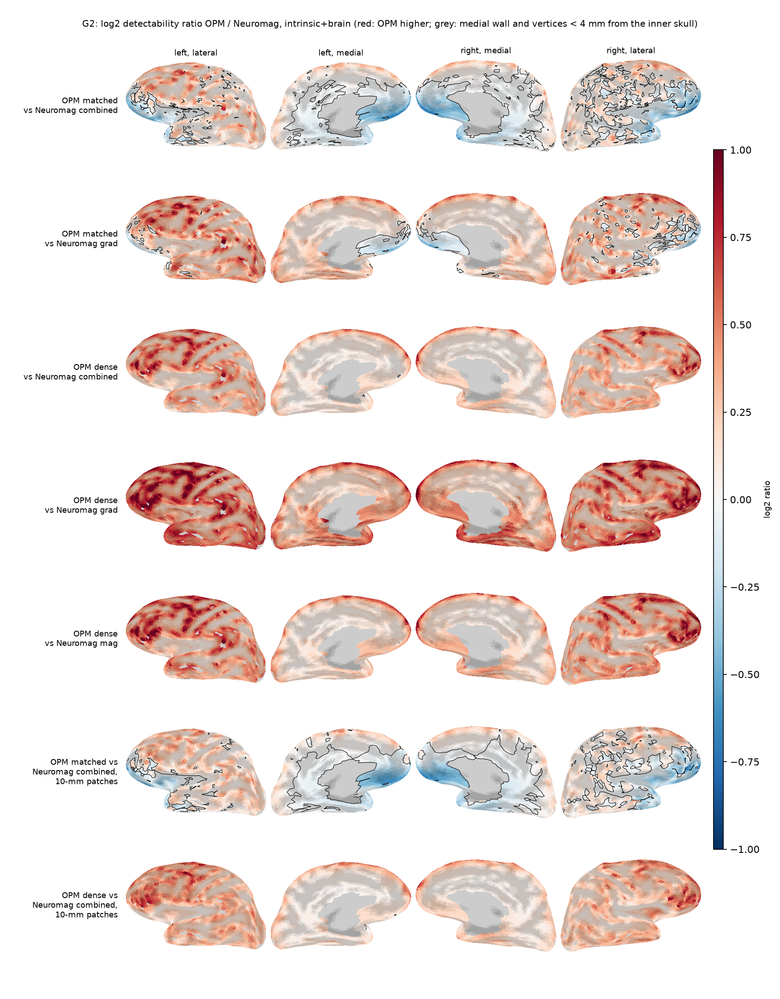
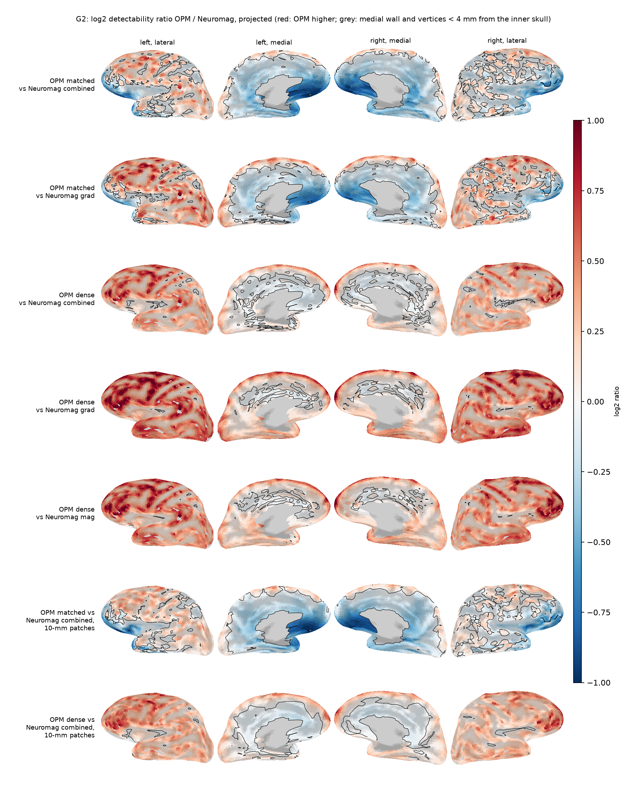
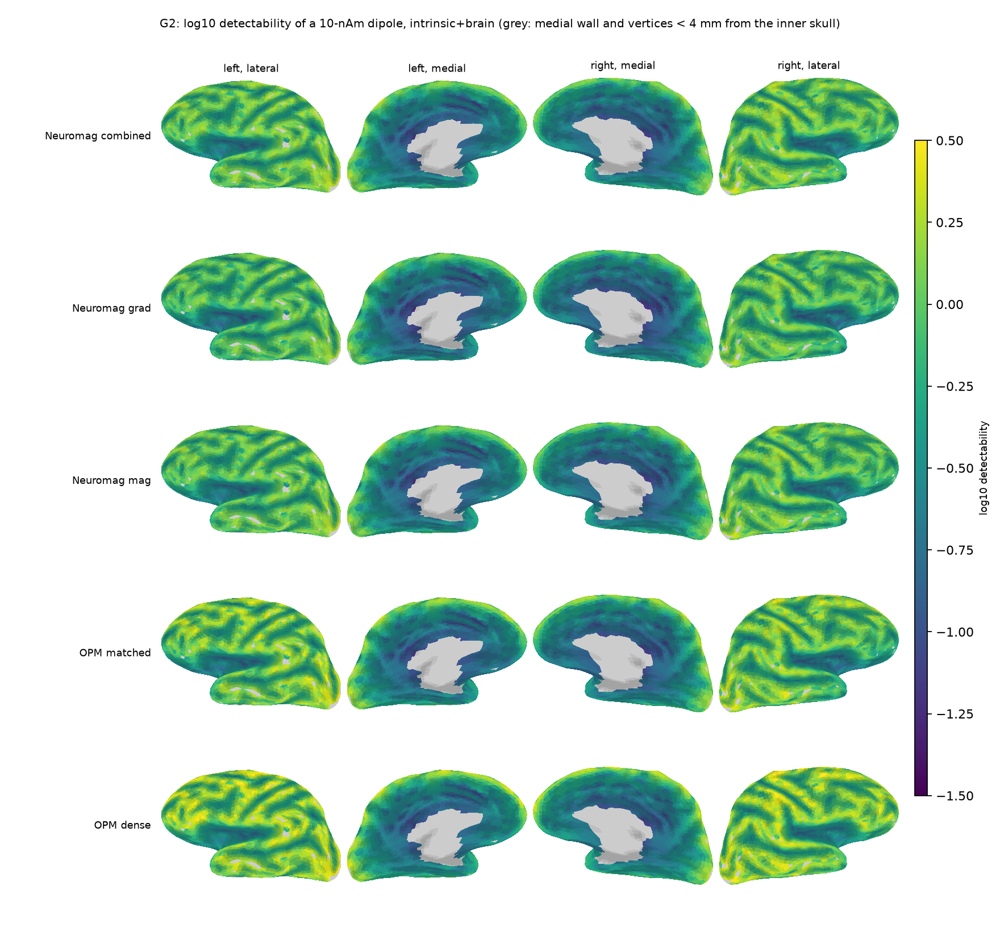
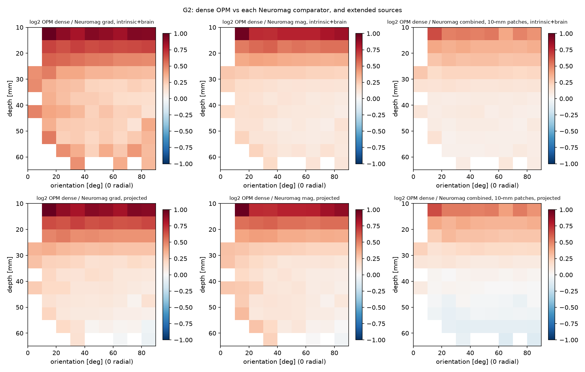
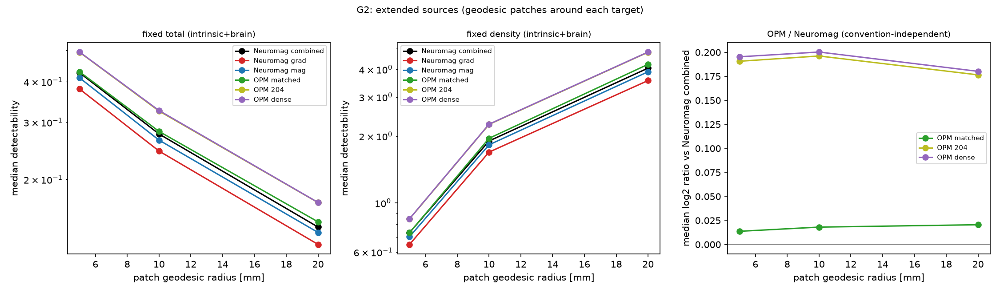
Sensitivity and model dependence
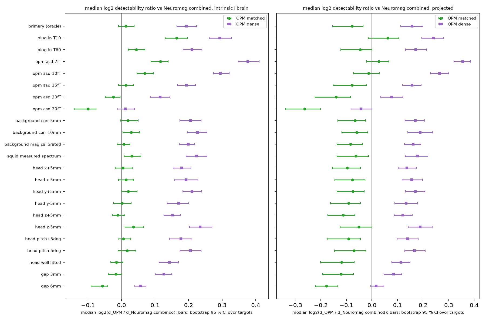
| Scalp gap, OPM noise [fT/sqrt(Hz)] | OPM matched | OPM dense |
|---|---|---|
| gap 0mm, OPM noise 15fT | 1.01x | 1.14x |
| gap 0mm, OPM noise 20fT | 0.98x | 1.08x |
| gap 0mm, OPM noise 30fT | 0.93x | 1.01x |
| gap 3mm, OPM noise 15fT | 0.99x | 1.09x |
| gap 3mm, OPM noise 20fT | 0.96x | 1.03x |
| gap 3mm, OPM noise 30fT | 0.89x | 0.97x |
| gap 6mm, OPM noise 15fT | 0.96x | 1.04x |
| gap 6mm, OPM noise 20fT | 0.91x | 0.99x |
| gap 6mm, OPM noise 30fT | 0.84x | 0.92x |
Head model: with a 1-layer instead of the 3-layer BEM the dense/Neuromag ratio is 1.13x (3-layer on the same targets: 1.14x); refining the 1-layer mesh changes it by at most 0.002 in log2.
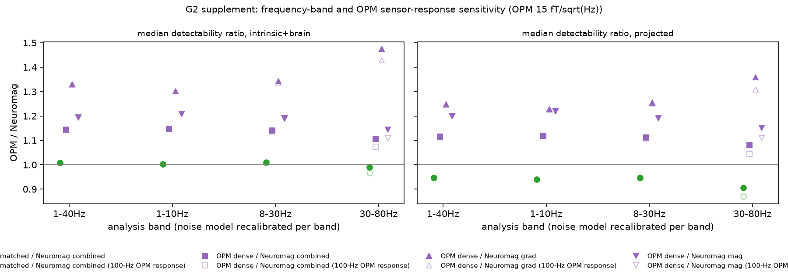
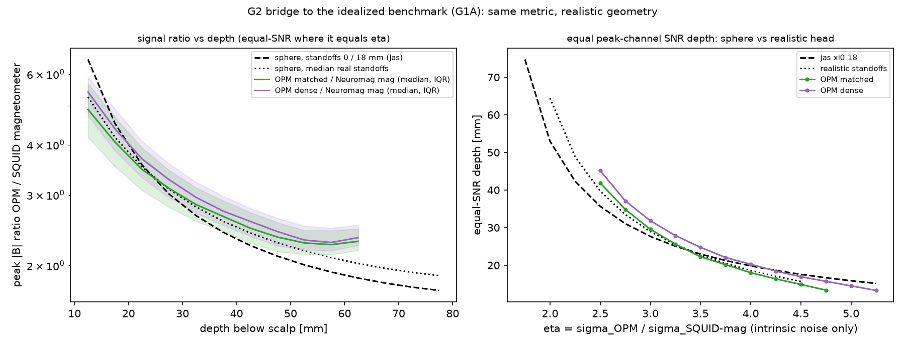